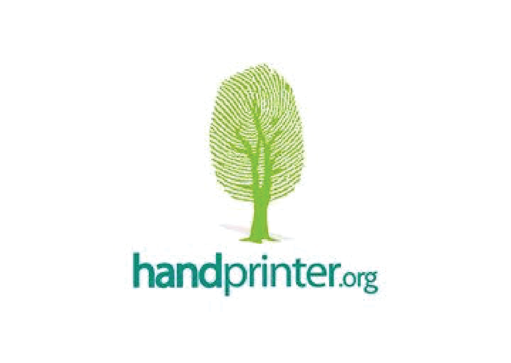

Handprinter.org
Team
- Alex Frazier
- Serene Gao
- Meghana Valluri
Opportunity
Since Handprinter is still in its early stages of development, our team has the opportunity to make a significant impact on the progress of the organization’s primary product – the Handprinting Community. Through this community, individuals submit action ideas that they believe can increase their handprint. These ideas are then be upvoted by other users of the community. Simultaneously, highly-skilled users trained in life-cycle assessment or environmental science contribute by choosing to model action ideas into numerical equations. These models, similar to action ideas, can be graded based on accuracy and validity by other expert users. This creates opportunity for an eventual global suite of mobile applications to access the most upvoted action ideas and best corresponding models. Users of these outside applications can choose an action item they have completed, input in their specific usage or consumption statistics into the model, and calculate their individual handprint. Thus, while Handprinter is a social initiative targeted at increasing environmental consciousness, the mission, at its core, is driven by technology. Rather than focusing on systems that address potential organizational or information management issues, our team has determined that working to develop this Handprinting Community will create the most value for our client.
Outcomes
We have successfully developed a crowd-sourcing platform in the form of a Ruby on Rails webbased application that achieves our initial project vision and matches our client’s requirements. Users can register into the Handprinter Community and submit action ideas. These action ideas can be commented and voted on. Users can train to become modelers, and then can model action ideas using a comprehensive form. Various versions of models are stored per action idea so that a detailed history of models is kept and easily navigable. Administrative users have the ability to change model statuses from ‘complete’ to ‘ready to use’, indicating that a model is sufficiently detailed to implemented in a calculation of a person’s handprint.
Deliverables
We have live hosted our application at www.handprinter2.herokuapp.com. We have turned over a private GitHub repository to our client, as well as trained our client in use of the system. We have created a video that walks through all the functionality of the system, including the various user roles and capabilities. We have compiled a list of potential bugs and issues that developers might run into and recommendations for how to fix them. We have also detailed out all creative decision points and explained the justifications for them. Finally, we have compiled a project roadmap that explains the desired functionality of all future pieces of the Handprinting process. Lastly, we have documented our application code extensively for future maintainers of our project.